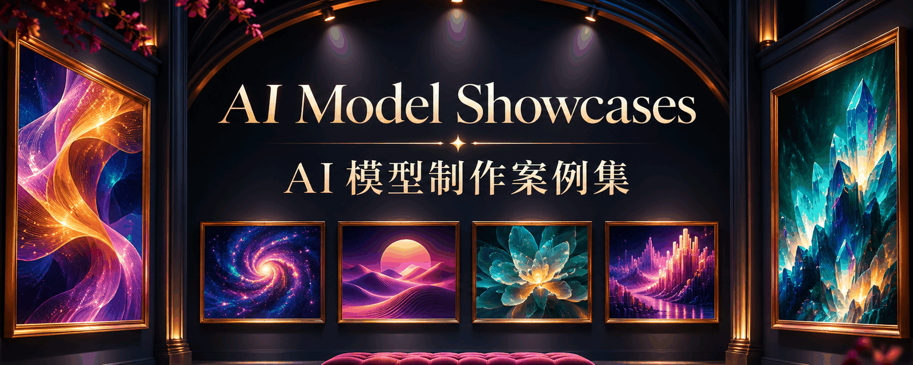

Awesome AI Model Showcases
Real cases from the public web.
Find AI-made animations, interactive demos and games. See the work, then explore its creator, prompt and source.

Case catalog0
Each row is an original post or source site. The homepage list is the frontier families. Promo, 2.5, and failures stay out. GPT Image GIFs are a separate subproject.
| # | Author | Play | Post | Media | prompt | Model | Pipeline | Verification | License |
|---|
No matching cases.
What this catalog is
What is this repository?
A community library of frontier-model cases: Claude, Gemini, GPT-6.2 Sol, Grok, Qwen, and DeepSeek. Each case keeps author, post, prompt (empty if unpublished), and a credited video when the source had one. GPT Image 2.6 GIFs are the subproject collections/gpt-image-gifs and are not in the homepage total. Not this repository's original playbook showcase.
What can I do with it?
Open sources, copy published original prompts, submit another original-author case. Browsing does not call the Images API.
What can it not do?
No exhaustive-web claim, no official verification, no unlicensed redistribution, no SVG-as-result. Appendix playbook/popular pages are Chinese-first and not a second inventory.
What are the license boundaries?
MIT covers source code only. Third-party media stays license-unknown unless a specific grant is recorded per case. Follow credited licenses; no blanket CC0 grant. Stars or traffic are not a license.
Which languages are maintained?
Five README editions share one catalog: English, Simplified Chinese, Traditional Chinese, Japanese, and Korean. The web gallery is still English and Simplified Chinese.
Real local GIFs00
Only media with a documented publication grant plays here. Other entries link to the original source.
No matching real GIFs.
Playbooks live on appendix pages.
This-repo adaptations, Morphic cards (examples are not 2.6), and popular-GIF restages are not the main community list. Those appendix pages are Chinese-first and not claimed as a full English sync.
Appendix · playbooks & promptsAppendix · popular GIF restages (not 2.6)
Game sequences (verification labeled)
Original post + media link + prompt or explicit empty + model evidence.
2.5, promo, failure, and this-repo playbooks go to the appendix.
Do not put third-party GIFs in docs/gifs/.
Concept covers are never model outputs.